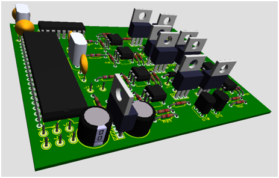

A brazillian exchange student from Minas Gerais, enrolled at IUPUI for a Bachelor of Science in Computer Engineering degree since 2014 Fall semester, participant in the Brazillian Scientific Mobility Program. In Brazil he is a student from Federal Center of Technological Education of Minas Gerais (CEFET/MG).
Worked in his university back in Brazil as researcher in Interdisciplinary Multimedia Information Research Laboratory (PIIMLab) and on Trincabotz CEFET/MG.
From his work he have grown interest in the field of Embedded Systems and Multimedia Processing.
 In Trincabotz participated on the design of a control circuit for Hobbyweight category robots (up to 12lb), which converted pulse position modulated signals to pulse width modulated signals, programming the PIC16F877A microcontroller.
The control board was used on the Trem (image on right) and newTrem (image on left) projects.